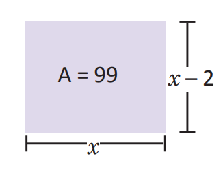

Función cuadrática de la forma y = ax² + c
En el siglo XVI, comenzaron a introducirse los símbolos que hoy se utilizan en el planteamiento de ecuaciones. Uno de los matemáticos que mayor influencia tuvo en este cambio favorable para el desarrollo del Álgebra, fue el francés François Viète (1540-1603), con el uso de símbolos para expresar la incógnita y los coeficientes de una ecuación, facilitando el estudio de ecuaciones de grado 2, 3 y 4, que a partir de la edad moderna se les comenzó a llamar “funciones”.
Dados los hallazgos de los matemáticos, se conoce en la actualidad la utilización de las funciones cuadráticas en las diferentes ramas de las ciencias naturales (Biología, Física y Química), así como en la economía y construcciones en la arquitectura, realizando aportes significativos para la humanidad

En esta unidad relacionarás magnitudes utilizando la proporcionalidad al cuadrado, ubicar pares ordenados en el plano cartesiano para graficar la función y = x² así como describir la variación de los valores de la función y = ax².

Tablilla BM 13901 es uno de los textos matemáticos más antiguos se encuentra en el Museo Británico de Londres, Inglaterra, comprende 24 problemas y sus soluciones.

Don Antonio tiene un terreno cuadrado para cultivar frijol, ¿cómo se puede determinar la medida de los lados del terreno si este tiene un área de 100m²?


Haciendo un esquema de la situación: Utilizando x para simbolizar la longitud del lado. El área del terreno es de 100m², entonces se puede plantear la ecuación: x2 = 100 Para determinar la medida de los lados del terreno hay que resolver esta ecuación


La ecuación planteada en el problema es x2 = 100, si se transpone el 100, también se puede expresar como x2 – 100 = 0, en la cual la incógnita está elevada al cuadrado. Este tipo de ecuaciones son llamadas ecuaciones cuadráticas. En general, se define ecuación cuadrática como las ecuaciones de la forma ax2 + bx + c = 0; con a, b, c números reales y a ≠ 0. Por ejemplo: 2x2 – 3 = 0, 9x2 – 3 = 0 , (x + 5)2 – 16 = 0, x2 + 4x + 1 = 0, x2 + 4x = 0, etc.

Don Miguel tiene un terreno rectangular cuyo largo tiene 2 m más que el ancho y su área es de 99m². Determina la ecuación que simboliza el problema representando con x la medida del largo.
-

Aplicando el área del rectángulo (A = base × altura). x (x – 2) = 99
Desarrollando el producto: x2 – 2x = 99
Transponiendo el 99: x2 – 2x – 99 = 0